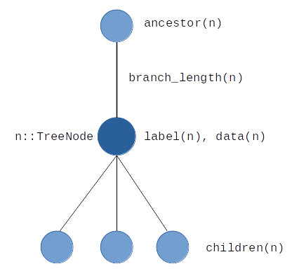

Basic concepts
To introduce basic concepts and data structures used in TreeTools, we will use the small tree given by this Newick string: "((A:1,B:1)AB:2,C:3)R;". To obtain a tree from the string, run the following code in a julia REPL:
julia> using TreeToolsjulia> nwk = "((A:1,B:1)AB:2,C:3)R;""((A:1,B:1)AB:2,C:3)R;"julia> tree = parse_newick_string(nwk)_________________________ A __________________________________________________| _| |_________________________ B | |____________________________________________________________________________ C
TreeNode
At the basic level, the tree is represented by a set of linked TreeNode structures. A node n contains the following information:
ancestor(n)returns the node aboven. Ifnis the root,ancestor(n)returnsnothing.children(n)returns an array containing all the nodes belown. Ifnis a leaf,children(n)is empty.label(n)returns the label ofn, which also serves as an identifier ofnin many TreeTools functions. See the warning below.branch_length(n)returns the length of the branch abovenas aFloat64. Ifnis the root or if it does not have a branch length, it returnsmissing.data(n)returns data attached ton, see TreeNodeDataisroot(n)andisleaf(n)are boolean functions with explicit behavior.
TreeTools generally uses the label of nodes as an identifier. This is visible in the Tree structure which uses node labels for indexing. Another example is the equality between TreeNode objects n1 == n2, which simply falls back to label(n1) == label(n2). For this reason, it is strongly discouraged to directly change the label of a node, e.g. by doing something like n.label = mylabel. A function label! is provided for that, called like this: label!(tree, n, mylabel). This makes sure that the struct tree is informed about the label change.
TreeTools does not actively enforce the fact that trees do not have loops. That is, if you try to, you can perfectly create a state where e.g. a node is its own ancestor. This will of course result in a lot of issues. I'd like to enforce the absence of loops at some point, but for now it's up to the user to be careful.
The illustration below is a summary of the TreeNode object. 
Each TreeNode can be accessed by directly indexing into the tree:
julia> AB = tree["AB"]Node AB: Ancestor: R, branch length = 2.0 2 children: ["A", "B"]
Testing this on the above example would give:
julia> println("The ancestor of $(label(AB)) is $(label(ancestor(AB))), at distance $(branch_length(AB))")The ancestor of AB is R, at distance 2.0julia> println("Children of $(label(AB)): ", map(label, children(AB)))Children of AB: ["A", "B"]julia> isleaf(AB)falsejulia> map(isleaf, children(AB))2-element Vector{Bool}: 1 1julia> isroot(ancestor(AB))true
Changing the value of the branch length or of the data attached to a node is done using the branch_length! and data! functions:
julia> branch_length!(AB, 4.)4.0julia> println("The distance from $(label(AB)) to $(label(ancestor(AB))) is now $(branch_length(AB))")The distance from AB to R is now 4.0
TreeTools has no structure or type to represent branches. Since only rooted trees are considered, it is natural for each node to "own" the branch above it. As a result, informations about branches are expected to be stored on the node below, as is the case for the branch length.
TreeNodeData
TreeTools gives the possibility to attach data to nodes. The TreeNode type is parametric: if data of type D is attached to a node, its type will be TreeNode{D}. Children and ancestor of a TreeNode{D} object must also be of the TreeNode{D} type. This implies that all nodes in the tree must have the same type of data attached to them.
The data type D has to be a subtype of the abstract type TreeNodeData. The creation of nodes with a given data type is controlled by the node_data_type keyword argument in functions like parse_newick_string or read_tree (see the Reading and writing page). Two subtypes of TreeNodeData are already implemented in TreeTools.
EmptyDatais a data type containing nothing. Use it if you do not want to attach any data to nodes. It is used by default when creating tree nodes.MiscDatais a wrapper aroundDict, allowing arbitrary data to be stored
julia> tree = parse_newick_string("((A:1,B:1)AB:2,C:3)R;", node_data_type = MiscData)_________________________ A __________________________________________________| _| |_________________________ B | |____________________________________________________________________________ Cjulia> A = tree["A"]Node A: Ancestor: AB, branch length = 1.0 0 children: String[]julia> typeof(A)TreeNode{MiscData}julia> dat = data(A)MiscData(Dict{Any, Any}())julia> dat[1] = 2; dat["Hello"] = "world!";julia> data(A)MiscData(Dict{Any, Any}("Hello" => "world!", 1 => 2))julia> data(A)["Hello"]"world!"
Custom data type
One can of course create arbitrary subtypes of TreeNodeData. The only requirement for a custom data type D is that the call D() returns a valid instance of the type. This is used when initially constructing the tree. Below is an example of a custom Sequence type. Note that if you actually want to use biological sequences, I encourage the use of the BioSequences.jl package.
julia> Base.@kwdef mutable struct Sequence <: TreeNodeData # Create a custom data type seq :: String = "" seq_type :: Symbol = :dna endMain.Sequencejulia> tree = parse_newick_string("((A:1,B:1)AB:2,C:3)R;", node_data_type = Sequence)_________________________ A __________________________________________________| _| |_________________________ B | |____________________________________________________________________________ Cjulia> typeof(tree["C"])TreeNode{Main.Sequence}julia> data!(tree["C"], Sequence(seq = "ACGT"))Main.Sequence("ACGT", :dna)julia> data(tree["C"]).seq"ACGT"julia> data(tree["C"]).seq_type:dna
Tree
In principle, access to one TreeNode object is enough to perform any operation on the tree. However, in practice, it is often convenient to see the tree as a concept on its own, and not to see it through one of its nodes. This is why TreeTools uses the Tree structure, which is basically a list of TreeNode objects. Tree objects provide some specific methods:
nodesandleavesandinternalsrespectively return iterators over all nodes, leaves and internal nodes of the tree, in an arbitrary order
julia> println("Internal nodes: ", map(label, internals(tree)))Internal nodes: ["R", "AB"]julia> println("Leaves: ", map(label, leaves(tree)))Leaves: ["B", "A", "C"]
- the call
tree[label]will return the tree node with the corresponding label. Presence of a node in tree can be checked within(node, tree)orin(label, tree)
julia> in("AB", tree)truejulia> in(tree["AB"], tree)truejulia> in("MyCat", tree)false
labelreturns the name of the tree. It can be changed thelabel!methodrootreturns the root of the tree
Trees are construceted automatically from Newick strings when using functions such as parse_newick_string or read_tree (see Reading and writing). To construct a tree from a Tree from a TreeNode, use the node2tree function. Note that this is only intended to be used on root nodes: a warning will be produced if not.
julia> R = tree["R"]Node R (root) Ancestor : `nothing` (root) 2 children: ["AB", "C"]julia> tree2 = node2tree(R)_________________________ A __________________________________________________| _| |_________________________ B | |____________________________________________________________________________ C
The call tree2 = node2tree(tree.root) will produce another tree that shares nodes with tree.. This is usually not a good way to copy a tree, since the actual tree nodes are not copied. Any modification of the nodes of tree will also modify those of tree2. To make an independent copy, simply call copy(tree).